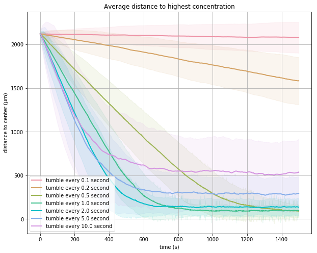

Conclusion: The Beauty of E. coli’s Randomized Exploration Algorithm
Two randomized exploration strategies
In this final lesson of the module, we will use what we have learned about chemotaxis to build a random walk model emulating the behavior of E. coli within a background containing a variable concentration of attractant. The bacterium will reorient itself randomly, but it will be able to change its tumbling frequency based on the current relative concentration of attractant at its location.
We will then compare this realistic model of bacterial movement against a baseline algorithm modeling a fixed-tumbling frequency random walk. That is, the bacterium walks for a fixed distance and then reorients itself randomly. Which exploration algorithm allows the bacterium to locate the source of the attractant more reliably? And is one algorithm faster than the other?
We will represent a bacterium as a point in two-dimensional space. At any point (x, y), there is some concentration L(x, y) of ligand; furthermore, we simulate an attractant gradient by ensuring that there is a point (called the goal) at which L(x, y) is maximized, with the concentration of attractant diminishing as the distance from this point increases.
Units in this space will be in µm, so that moving from (0, 0) to (0, 20) is 20µm, a distance that we know from the introduction can be covered by the bacterium in 1 second during an uninterrupted run. The bacterium will start at the origin (0, 0), which we will establish to have a ligand concentration of 100 molecules/µm3. The goal contains a maximum concentration of 108 molecules/µm3 and is located at the point (1500, 1500), requiring the bacterium to travel a significant distance to locate the attractant. The concentration of ligands [L] grows exponentially from the origin to the goal; specifically, L(x, y) = 100 · 106 · (1-d/D), where d is the distance from (x, y) to the goal, and D is the distance from the origin to the goal.
STOP: How can we quantify how well a bacterium has done at finding the attractant?
To measure average-case behavior, we will run our random walk simulations many times for each of our two strategies, where each simulation lasts some fixed time t. (This parameter should be large enough to allow the bacterium to have enough time to reach the goal.) To compare the two strategies, we will then measure how far on average a bacterium with each strategy ends up from the goal.
We now will specify the details of the two strategies.
Strategy 1: Standard random walk
Given a specified amount of time to run the simulation, the model takes the following steps. First, we select a random direction of movement along with a duration of our tumble. The degree of reorientation follows a uniform distribution from 0° to 360°. The duration of each tumble follows an exponential distribution with mean 0.1s1. As the result of a tumble, the cell only changes its orientation, not its position.
We then select a random duration to run and let the bacterium run in that direction for the specified amount of time. The duration of each run follows an exponential distribution with mean equal to some parameter t0, which we set equal to the experimentally verified value of 1 second.
We then iterate these two steps of tumbling and running until the total time used is equal to the time devoted to the simulation.
In the following tutorial, we simulate this naive strategy using a Jupyter notebook that will also help us visualize the results of the simulation. We will later use this notebook as a starting point when examining our second strategy, which attempts to mimic the response of E. coli to its environment based on what we have learned about chemotaxis and is described below.
Visit standard random walk tutorial
Strategy 2: Chemotactic random walk
In our second strategy, we mimic the modified random walk that we discussed in previous lessons. The bacterium will still follow a run and tumble model, but the duration of its runs (and therefore its tumbling frequency) depends on the relative change in attractant concentration that it detects.
To ensure a mathematically controlled comparison, we will use the same approach for determining the duration of a tumble and the resulting direction of a run as in strategy 1.
This strategy will therefore differ only in how it chooses the length of a run. Let t0 denote the mean background run duration, which in the first strategy was equal to 1 second, and let Δ[L] denote the difference between the ligand concentration L(x, y) at the current point and the ligand concentration at the cell’s previous point. We would like to choose a simple formula for the expected run duration like t0 * (1 + 10 · Δ[L]). The only issue is that if Δ[L] is less than -0.1, then the run duration could be negative, and if Δ[L] is very large then we could run in one direction for too long without allowing the cell to reassess the ligand concentration.
As a result, we will choose an expected duration for our run step by first taking the maximum of some small value close to 1 (we will use 0.000001) and t0 * (1 + 10 · Δ[L]); then, we take the minimum of the resulting value and 4 · t0. We use this expected duration as the mean for an exponential distribution for this step, and sample the run duration.
As with the first strategy, our simulated cell will alternate between tumbling and running until the total amount of time devoted to the simulation has been consumed. In the following tutorial, we will adapt the Jupyter notebook that we built in the previous tutorial to simulate this strategy. We then will compare the two strategies in the next section.
Visit chemotactic walk tutorial
Comparing the effectiveness of our two random walk strategies
The following figure visualizes the trajectories of three cells using strategy 1 (left) and strategy 2 (right). After 500 seconds, cells using strategy 1 have traveled away from the origin, and some of them are found in locations with higher concentrations. The cells using strategy 2, however, quickly hone in on the goal and remain near it.
 Sample trajectories for the two strategies. The standard random walk strategy is shown on the left, and the chemotactic random walk is shown on the right. Regions that are more heavily colored red correspond to higher concentrations of ligand, with a goal having maximum concentration at the point (1500, 1500), which is highlighted using a blue square. A single cell’s walk is colored from darker to lighter colors across the time frame of the trajectory.
Sample trajectories for the two strategies. The standard random walk strategy is shown on the left, and the chemotactic random walk is shown on the right. Regions that are more heavily colored red correspond to higher concentrations of ligand, with a goal having maximum concentration at the point (1500, 1500), which is highlighted using a blue square. A single cell’s walk is colored from darker to lighter colors across the time frame of the trajectory.
Of course, we should be wary of our small sample size. To confirm that what we observed in these trajectories is true on average, we will compare the two strategies for many simulations. The following figure plots the cell’s average distance to the goal over 500 simulations for both strategies.
 Average distance to the goal plotted over time for 500 cellular simulations following each of the two strategies; the standard random walk is shown in red, and the chemotactic random walk is shown in blue. The shaded area for each strategy represents one standard deviation from the average.
Average distance to the goal plotted over time for 500 cellular simulations following each of the two strategies; the standard random walk is shown in red, and the chemotactic random walk is shown in blue. The shaded area for each strategy represents one standard deviation from the average.
Using strategy 1, cells have some chance of reaching the goal because they tend to spread out over time, but there is no aspect of the strategy that would keep the cells at the goal, and so the average distance to the goal does not decrease. With strategy 2, the cells are able to get closer to the goal and remain there due to the small standard deviation in their distance to the goal.
Strategy 2 corresponds to a very slight change in strategy 1 in which we allow the cell to run for a greater distance if it senses an increase in the attractant concentration. But the direction of travel is still random. So why would this strategy be so much better than a pure random walk?
The attractant detection serves as a sort of “rubber band”. If the bacterium is traveling down an attractant gradient (i.e., away from an attractant), then it is not allowed to travel very far in a single step. If an increase of attractant is detected, then the cell can travel farther before tumbling. On average, then, this effect helps to pull the bacterium in the direction of increasing attractant, even though each of its steps is taken in a random direction.
We have shown that a very slight change to a simple randomized algorithm can produce an elegant approach for exploring an unknown environment. But we left one more question unanswered. Why is it that a default tumbling frequency of one tumble per second appears to be evolutionarily stable across a wide range of bacteria?
To address this question, we will make changes to t0, the default time for a run step, and see how this affects the ability of a simulated bacterium following the chemotactic strategy to locate the goal. You may like to adjust the value of t0 in the chemotactic walk tutorial before continuing on.
Why is bacterial background tumbling frequency constant across species?
The following figures show three trajectories for a few different values of t0 and a simulation that lasts for 800 seconds. First, we set t0 equal to 0.2 seconds and see that the bacteria are not able to walk far enough in a single step. That is, the “rubber band” effect is too rigid.
 Three sample trajectories of a simulated cell following the chemotactic random walk strategy with a tumble every 0.2 seconds on average.
Three sample trajectories of a simulated cell following the chemotactic random walk strategy with a tumble every 0.2 seconds on average.
If we increase t0 to 5.0 seconds, then the rubber band becomes too flexible, meaning that cells can run past the goal without being able to put on the brakes by tumbling.
 Three sample trajectories of a simulated cell following the chemotactic random walk strategy with a tumble every 5 seconds on average.
Three sample trajectories of a simulated cell following the chemotactic random walk strategy with a tumble every 5 seconds on average.
When we set t0 equal to 1.0, we see a “Goldilocks” effect in which the rubber band effect is just right. The simulated bacterium can run for long enough at a time to head quickly toward the goal, and it tumbles frequently enough to keep it there.
 Three sample trajectories of a simulated cell following the chemotactic random walk strategy with a tumble on average of once every second.
Three sample trajectories of a simulated cell following the chemotactic random walk strategy with a tumble on average of once every second.
To make this analysis more concrete, the figure below shows a plot of average distance to the goal over time for 500 simulated cells following the chemotactic strategy for a variety of choices of t0.
 Average distance to the goal over time for 500 cells. Each colored line indicates the average distance to the goal over time a different value of t0; the shaded area represents one standard deviation.
This figure illustrates the a tradeoff between reaching the target quickly and being able to stay there. For large values of t0 (10.0, 5.0, 2.0), distances to the goal decrease very quickly at the beginning of the simulation, but the cells don’t stay there effectively. For small values of t0 (0.1, 0.2, 0.5), the cells fail to move to the ligand efficiently. When t0 is equal to 0.5 seconds, the cell is able to remain around the goal, but it takes about 400 seconds longer to reach the goal than when t0 is equal to 1.0 seconds.
Recall the video of E. coli moving towards the sugar crystal that we showed at the beginning of this module, which we reproduce below. The video shows that the behavior of real E. coli is reflected by our simulated bacteria. Bacteria generally move towards the crystal and then remain close to it; some bacteria run by the crystal, but they then turn around to move toward the crystal again.
Bacteria are even smarter than we thought
If you closely examine the video above, then you may be curious about the way that bacteria turn around and head back toward the attractant. When they reorient, their behavior appears more intelligent than simply walking in a random direction. The reason for this behavior of the bacteria is that like most things in biology, the reality turns out to be more complex than we might at first imagine.
Specifically, researchers first showed that the direction of reorientation rather follows a normal distribution with mean of 68° and standard deviation of 36°2. That is, the bacterium typically does not tend to make as drastic of a change to its orientation as it would in a pure random walk, which would on average have a change in orientation of 90°.
Yet recent research has shown that the direction of the bacterium’s reorientation depends on whether the cell is traveling in the correct direction.3 If moving up an attractant gradient, then the cell makes much smaller changes in its reorientation angle. This allows the cell to retain its orientation if it is moving in the correct direction while also to turn around quickly if it starts heading in the wrong direction. We can even see this behavior in the figure above, in which bacteria traveling toward the attractant make only very slight changes in their direction of travel, but reorient themselves more drastically if they overshoot the target.
In this module, we have witnessed the emergence of an apparently intelligent algorithm from a simple collection of reactions that drive an organism’s biochemistry. What look like decisions made by the bacterium are in fact robust actions taken as the direct result of chemical reactions.
Bacterial chemotaxis is probably the best understood biological system from the perspective of understanding how low-level chemical actions cause emergent behavior. But that is not to say that it is the only such system. As we pointed out in the prologue, this thread connecting chemical reactions to the behavior that we experience as life is for the most part still invisible. Although a simple system like bacterial chemotaxis can be understood concretely, a rationale for how microscopic processes drive macroscopic action is a mystery that may be unresolved for a very long time to come.
-
Saragosti J., Siberzan P., Buguin A. 2012. Modeling E. coli tumbles by rotational diffusion. Implications for chemotaxis. PLoS One 7(4):e35412. available online. ↩
-
Berg HC, Brown DA. 1972. Chemotaxis in Escherichia coli analysed by three-dimensional tracking. Nature. Available online ↩
-
Saragosti J, Calvez V, Bournaveas, N, Perthame B, Buguin A, Silberzan P. 2011. Directional persistence of chemotactic bacteria in a traveling concentration wave. PNAS. Available online ↩